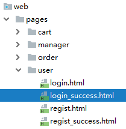
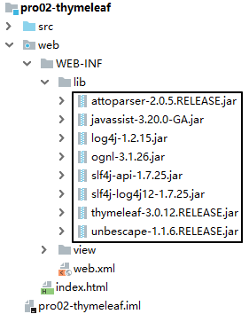
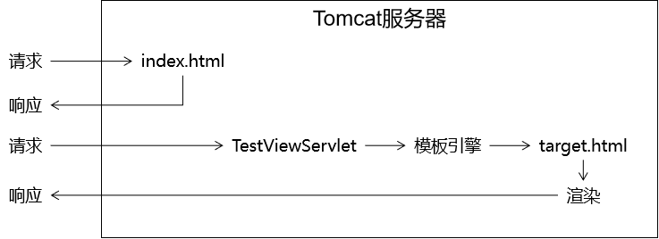
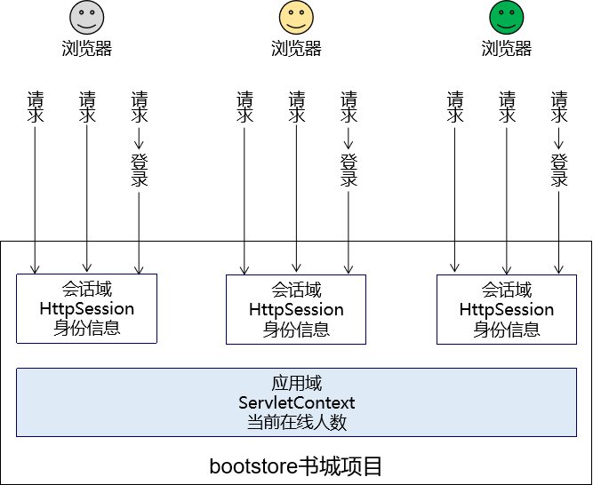
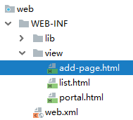

Thmeleaf¶
第一章 Thymeleaf入门¶
1. 学习目标¶
- 掌握MVC
- 了解Thymeleaf的简介
- 掌握引入Thymeleaf
- 掌握Thymeleaf的入门案例
2. 内容讲解¶
2.1 MVC¶
2.1.1 为什么需要MVC¶
我们之前在书城项目第二阶段做登录的时候，曾经提出过优化登录失败后的处理，曾经编写过下面这段代码

这段代码虽然说可以实现在登录失败之后跳转回到登录页面，并且展示失败信息，但是代码实在是太恶心了，根本没法维护，所以我们需要将视图展示抽取出来，单独作为一个View视图层
但是我们如果只使用HTML作为视图的话，它是无法展示动态数据的，所以我们对HTML的新的期待：既能够正常显示页面，又能在页面中包含动态数据部分。而动态数据单靠HTML本身是无法做到的，所以此时我们需要引入服务器端动态视图模板技术。
2.1.2 MVC概念¶
M：Model模型
V：View视图
C：Controller控制器
MVC是在表述层开发中运用的一种设计理念。主张把封装数据的『模型』、显示用户界面的『视图』、协调调度的『控制器』分开。
好处：
- 进一步实现各个组件之间的解耦
- 让各个组件可以单独维护
- 将视图分离出来以后，我们后端工程师和前端工程师的对接更方便
2.1.3 MVC和三层架构之间关系¶

2.2 Thymeleaf的简介¶
2.2.1 Thymeleaf的概念¶
Thymeleaf是一款用于渲染XML/XHTML/HTML5内容的模板引擎。类似JSP，Velocity，FreeMaker等， 它也可以轻易的与Spring MVC等Web框架进行集成作为Web应用的模板引擎。它的主要作用是在静态页面上渲染显示动态数据
2.2.2 Thymeleaf的优势¶
-
SpringBoot官方推荐使用的视图模板技术，和SpringBoot完美整合。
-
不经过服务器运算仍然可以直接查看原始值，对前端工程师更友好。
<!DOCTYPE html>
<html lang="en" xmlns:th="http://www.thymeleaf.org">
<head>
<meta charset="UTF-8">
<title>Title</title>
</head>
<body>
<p th:text="${username}">Original Value</p>
</body>
</html>
2.2.3 物理视图和逻辑视图¶
2.2.3.1 物理视图¶
在Servlet中，将请求转发到一个HTML页面文件时，使用的完整的转发路径就是物理视图。
/pages/user/login_success.html
如果我们把所有的HTML页面都放在某个统一的目录下，那么转发地址就会呈现出明显的规律：
/pages/user/login.html /pages/user/login_success.html /pages/user/regist.html /pages/user/regist_success.html
……
路径的开头都是：/pages/user/
路径的结尾都是：.html
所以，路径开头的部分我们称之为视图前缀，路径结尾的部分我们称之为视图后缀。
2.2.3.2 逻辑视图¶
逻辑视图¶
物理视图=视图前缀+逻辑视图+视图后缀
上面的例子中：
| 视图前缀 | 逻辑视图 | 视图后缀 | 物理视图 |
|---|---|---|---|
| /pages/user/ | login | .html | /pages/user/login.html |
| /pages/user/ | login_success | .html | /pages/user/login_success.html |
2.3 Thymeleaf的入门案例¶
2.3.1 加入jar包¶

2.3.2 配置上下文参数¶

物理视图=视图前缀+逻辑视图+视图后缀
<!-- 在上下文参数中配置视图前缀和视图后缀 -->
<context-param>
<param-name>view-prefix</param-name>
<param-value>/WEB-INF/view/</param-value>
</context-param>
<context-param>
<param-name>view-suffix</param-name>
<param-value>.html</param-value>
</context-param>
说明：param-value中设置的前缀、后缀的值不是必须叫这个名字，可以根据实际情况和需求进行修改。
为什么要放在WEB-INF目录下？
原因：WEB-INF目录不允许浏览器直接访问，所以我们的视图模板文件放在这个目录下，是一种保护。以免外界可以随意访问视图模板文件。
访问WEB-INF目录下的页面，都必须通过Servlet转发过来，简单说就是：不经过Servlet访问不了。
这样就方便我们在Servlet中检查当前用户是否有权限访问。
那放在WEB-INF目录下之后，重定向进不去怎么办？
重定向到Servlet，再通过Servlet转发到WEB-INF下。
2.3.3 创建Servlet基类¶
这个类大家直接复制粘贴即可，将来使用框架后，这些代码都将被取代。
import org.thymeleaf.TemplateEngine;
import org.thymeleaf.context.WebContext;
import org.thymeleaf.templatemode.TemplateMode;
import org.thymeleaf.templateresolver.ServletContextTemplateResolver;
import javax.servlet.ServletContext;
import javax.servlet.ServletException;
import javax.servlet.http.HttpServlet;
import javax.servlet.http.HttpServletRequest;
import javax.servlet.http.HttpServletResponse;
import java.io.IOException;
public class ViewBaseServlet extends HttpServlet {
private TemplateEngine templateEngine;
@Override
public void init() throws ServletException {
// 1.获取ServletContext对象
ServletContext servletContext = this.getServletContext();
// 2.创建Thymeleaf解析器对象
ServletContextTemplateResolver templateResolver = new ServletContextTemplateResolver(servletContext);
// 3.给解析器对象设置参数
// ①HTML是默认模式，明确设置是为了代码更容易理解
templateResolver.setTemplateMode(TemplateMode.HTML);
// ②设置前缀
String viewPrefix = servletContext.getInitParameter("view-prefix");
templateResolver.setPrefix(viewPrefix);
// ③设置后缀
String viewSuffix = servletContext.getInitParameter("view-suffix");
templateResolver.setSuffix(viewSuffix);
// ④设置缓存过期时间（毫秒）
templateResolver.setCacheTTLMs(60000L);
// ⑤设置是否缓存
templateResolver.setCacheable(true);
// ⑥设置服务器端编码方式
templateResolver.setCharacterEncoding("utf-8");
// 4.创建模板引擎对象
templateEngine = new TemplateEngine();
// 5.给模板引擎对象设置模板解析器
templateEngine.setTemplateResolver(templateResolver);
}
protected void processTemplate(String templateName, HttpServletRequest req, HttpServletResponse resp) throws IOException {
// 1.设置响应体内容类型和字符集
resp.setContentType("text/html;charset=UTF-8");
// 2.创建WebContext对象
WebContext webContext = new WebContext(req, resp, getServletContext());
// 3.处理模板数据
templateEngine.process(templateName, webContext, resp.getWriter());
}
}
2.3.4 入门案例代码¶
2.3.4.1 创建index.html文件¶

2.3.4.2 index.html编写超链接访问Servlet¶
<a href="/webday08/TestThymeleafServlet">初步测试Thymeleaf</a>
2.3.4.2 创建Servlet¶

<servlet>
<servlet-name>testThymeleafServlet</servlet-name>
<servlet-class>com.atguigu.servlet.TestThymeleafServlet</servlet-class>
</servlet>
<servlet-mapping>
<servlet-name>testThymeleafServlet</servlet-name>
<url-pattern>/testThymeleaf</url-pattern>
</servlet-mapping>
2.3.4.3 修改Servlet让其继承ViewBaseServlet¶

2.3.4.4 在doPost()方法中跳转到Thymeleaf页面¶
package com.atguigu.servlet;
import javax.servlet.ServletException;
import javax.servlet.http.HttpServletRequest;
import javax.servlet.http.HttpServletResponse;
import java.io.IOException;
/**
* @author Leevi
* 日期2021-05-13 09:15
*/
public class TestThymeleafServlet extends ViewBaseServlet {
@Override
protected void doPost(HttpServletRequest request, HttpServletResponse response) throws ServletException, IOException {
doGet(request, response);
}
@Override
protected void doGet(HttpServletRequest request, HttpServletResponse response) throws ServletException, IOException {
request.setAttribute("username","奥巴马");
//请求转发跳转到/WEB-INF/view/target.html
processTemplate("target",request,response);
}
}
2.3.4.5 Thymeleaf页面代码¶
<!DOCTYPE html>
<html lang="en" xmlns:th="http://www.thymeleaf.org">
<head>
<meta charset="UTF-8">
<title>目标页面</title>
</head>
<body>
<h1 th:text="${username}">这里要显示一个动态的username</h1>
</body>
</html>
第二章 Thymeleaf的基本语法¶
1. 学习目标¶
- 掌握th名称空间
- 掌握表达式语法
- 掌握访问域对象
- 获取请求参数
- 掌握内置对象
- 掌握OGNL表达式
- 掌握分支和迭代
- 掌握使用Thymeleaf包含其它文件
- 使用Thymeleaf练习CRUD
2. 内容讲解¶
2.1 th名称空间¶

2.2 表达式语法¶
2.2.1 修改标签文本值¶
代码示例：
<p th:text="标签体新值">标签体原始值</p>
2.2.1.1 th:text作用¶
- 不经过服务器解析，直接用浏览器打开HTML文件，看到的是『标签体原始值』
- 经过服务器解析，Thymeleaf引擎根据th:text属性指定的『标签体新值』去替换『标签体原始值』
2.2.1.2 字面量和变量¶
『字面量』是一个经常会遇到的概念，我们可以对照『变量』来理解它的含义。
// a是变量，100是字面量
int a = 100;
System.out.println("a = " + a);
- 变量：变量名字符串本身不是它的值，它指向的才是它的值
- 字面量：它就是字面上的含义，我们从『字面』上看到的直接就是它的值
现在我们在th:text属性中使用的就是『字面量』，它不指代任何其他值。
2.2.2 修改指定属性值¶
代码示例：
<input type="text" name="username" th:value="文本框新值" value="文本框旧值" />
语法：任何HTML标签原有的属性，前面加上『th:』就都可以通过Thymeleaf来设定新值。
2.2.3 解析URL地址¶
代码示例：
<!--
使用Thymeleaf解析url地址
-->
<a th:href="@{/index.html}">访问index.html</a>
经过解析后得到：
/webday08/index.html
所以@{}的作用是在字符串前附加『上下文路径』
这个语法的好处是：实际开发过程中，项目在不同环境部署时，Web应用的名字有可能发生变化。所以上下文路径不能写死。而通过@{}动态获取上下文路径后，不管怎么变都不怕啦！
2.2.3.1 首页使用URL地址解析¶

如果我们直接访问index.html本身，那么index.html是不需要通过Servlet，当然也不经过模板引擎，所以index.html上的Thymeleaf的任何表达式都不会被解析。
解决办法：通过Servlet访问index.html，这样就可以让模板引擎渲染页面了：
进一步的好处：
通过上面的例子我们看到，所有和业务功能相关的请求都能够确保它们通过Servlet来处理，这样就方便我们统一对这些请求进行特定规则的限定。
2.2.3.2 给URL地址后面附加请求参数¶
参照官方文档说明：

2.3 域对象在Thymeleaf中的使用¶
2.3.1 回顾域对象¶
域对象是在服务器中有一定作用域范围的对象，在这个范围内的所有动态资源都能够共享域对象中保存的数据
2.3.2 回顾域对象的类型¶
2.3.2.1 请求域¶
在请求转发的场景下，我们可以借助HttpServletRequest对象内部给我们提供的存储空间，帮助我们携带数据，把数据发送给转发的目标资源。
请求域：HttpServletRequest对象内部给我们提供的存储空间

2.3.2.2 会话域(还没学)¶
会话域的范围是一次会话

2.3.2.3 应用域(全局域)¶
应用域的范围是整个项目全局

2.3.3 在Thymeleaf中操作域对象¶
我们通常的做法是，在Servlet中将数据存储到域对象中，而在使用了Thymeleaf的前端页面中取出域对象中的数据并展示
2.3.3.1 操作请求域¶
Servlet中代码：
String requestAttrName = "helloRequestAttr";
String requestAttrValue = "helloRequestAttr-VALUE";
request.setAttribute(requestAttrName, requestAttrValue);
Thymeleaf表达式：
<p th:text="${helloRequestAttr}">request field value</p>
2.3.3.2 操作会话域¶
Servlet中代码：
// ①通过request对象获取session对象
HttpSession session = request.getSession();
// ②存入数据
session.setAttribute("helloSessionAttr", "helloSessionAttr-VALUE");
Thymeleaf表达式：
<p th:text="${session.helloSessionAttr}">这里显示会话域数据</p>
2.3.3.3 操作应用域¶
Servlet中代码：
// ①通过调用父类的方法获取ServletContext对象
ServletContext servletContext = getServletContext();
// ②存入数据
servletContext.setAttribute("helloAppAttr", "helloAppAttr-VALUE");
Thymeleaf表达式：
<p th:text="${application.helloAppAttr}">这里显示应用域数据</p>
2.4 获取请求参数¶
2.4.1 获取请求参数的语法¶
${param.参数名}
2.4.2 根据一个参数名获取一个参数值¶
页面代码：
<p th:text="${param.username}">这里替换为请求参数的值</p>
页面显示效果：

2.4.3 根据一个参数名获取多个参数值¶
页面代码：
<p th:text="${param.team}">这里替换为请求参数的值</p>
页面显示效果：

如果想要精确获取某一个值，可以使用数组下标。页面代码：
<p th:text="${param.team[0]}">这里替换为请求参数的值</p>
<p th:text="${param.team[1]}">这里替换为请求参数的值</p>
页面显示效果：

2.5 内置对象¶
2.5.1 内置对象的概念¶
所谓内置对象其实就是在Thymeleaf的表达式中可以直接使用的对象
2.5.2 基本内置对象¶

用法举例：
<h3>表达式的基本内置对象</h3>
<p th:text="${#request.getContextPath()}">调用#request对象的getContextPath()方法</p>
<p th:text="${#request.getAttribute('helloRequestAttr')}">调用#request对象的getAttribute()方法，读取属性域</p>
基本思路：
- 如果不清楚这个对象有哪些方法可以使用，那么就通过getClass().getName()获取全类名，再回到Java环境查看这个对象有哪些方法
- 内置对象的方法可以直接调用
- 调用方法时需要传参的也可以直接传入参数
2.5.3 公共内置对象¶

Servlet中将List集合数据存入请求域：
request.setAttribute("aNotEmptyList", Arrays.asList("aaa","bbb","ccc"));
request.setAttribute("anEmptyList", new ArrayList<>());
页面代码：
<p>#list对象isEmpty方法判断集合整体是否为空aNotEmptyList：<span th:text="${#lists.isEmpty(aNotEmptyList)}">测试#lists</span></p>
<p>#list对象isEmpty方法判断集合整体是否为空anEmptyList：<span th:text="${#lists.isEmpty(anEmptyList)}">测试#lists</span></p>
公共内置对象对应的源码位置：

2.6 OGNL¶
2.6.1 OGNL的概念¶
OGNL：Object-Graph Navigation Language对象-图 导航语言
2.6.2 对象图的概念¶
从根对象触发，通过特定的语法，逐层访问对象的各种属性。

2.6.3 OGNL语法¶
2.6.3.1 起点¶
在Thymeleaf环境下，${}中的表达式可以从下列元素开始：
- 访问属性域的起点
- 请求域属性名
- session
- application
- param
- 内置对象
- request
- session
- lists
- strings
2.6.3.2 属性访问语法¶
- 访问对象属性：使用getXxx()、setXxx()方法定义的属性
- 对象.属性名
- 访问List集合或数组
- 集合或数组[下标]
- 访问Map集合
- Map集合.key
- Map集合['key']
2.7 分支与迭代¶
2.7.1 分支¶
2.7.1.1 if和unless¶
让标记了th:if、th:unless的标签根据条件决定是否显示。
示例的实体类：
package com.atguigu.bean;
/**
* 包名:com.atguigu.bean
*
* @author Leevi
* 日期2021-05-13 10:58
*/
public class Teacher {
private String teacherName;
public Teacher() {
}
public Teacher(String teacherName) {
this.teacherName = teacherName;
}
public String getTeacherName() {
return teacherName;
}
public void setTeacherName(String teacherName) {
this.teacherName = teacherName;
}
}
示例的Servlet代码：
protected void doGet(HttpServletRequest request, HttpServletResponse response) throws ServletException, IOException {
// 1.创建ArrayList对象并填充
List<Employee> employeeList = new ArrayList<>();
employeeList.add(new Employee(1, "tom", 500.00));
employeeList.add(new Employee(2, "jerry", 600.00));
employeeList.add(new Employee(3, "harry", 700.00));
// 2.将集合数据存入请求域
request.setAttribute("employeeList", employeeList);
// 3.调用父类方法渲染视图
super.processTemplate("list", request, response);
}
示例的HTML代码：
<table>
<tr>
<th>员工编号</th>
<th>员工姓名</th>
<th>员工工资</th>
</tr>
<tr th:if="${#lists.isEmpty(employeeList)}">
<td colspan="3">抱歉！没有查询到你搜索的数据！</td>
</tr>
<tr th:if="${not #lists.isEmpty(employeeList)}">
<td colspan="3">有数据！</td>
</tr>
<tr th:unless="${#lists.isEmpty(employeeList)}">
<td colspan="3">有数据！</td>
</tr>
</table>
if配合not关键词和unless配合原表达式效果是一样的，看自己的喜好。
2.7.1.2 switch¶
<h3>测试switch</h3>
<div th:switch="${user.memberLevel}">
<p th:case="level-1">银牌会员</p>
<p th:case="level-2">金牌会员</p>
<p th:case="level-3">白金会员</p>
<p th:case="level-4">钻石会员</p>
</div>
2.7.2 迭代¶
在迭代过程中，可以参考下面的说明使用迭代状态：

<!--遍历显示请求域中的teacherList-->
<table border="1" cellspacing="0" width="500">
<tr>
<th>编号</th>
<th>姓名</th>
</tr>
<tbody th:if="${#lists.isEmpty(teacherList)}">
<tr>
<td colspan="2">教师的集合是空的!!!</td>
</tr>
</tbody>
<!--
集合不为空，遍历展示数据
-->
<tbody th:unless="${#lists.isEmpty(teacherList)}">
<!--
使用th:each遍历
用法:
1. th:each写在什么标签上？ 每次遍历出来一条数据就要添加一个什么标签，那么th:each就写在这个标签上
2. th:each的语法 th:each="遍历出来的数据,数据的状态 : 要遍历的数据"
3. status表示遍历的状态，它包含如下属性:
3.1 index 遍历出来的每一个元素的下标
3.2 count 遍历出来的每一个元素的计数
3.3 size 遍历的集合的长度
3.4 current 遍历出来的当前元素
3.5 even/odd 表示遍历出来的元素是否是奇数或者是否是偶数
3.6 first 表示遍历出来的元素是否是第一个
3.7 last 表示遍历出来的元素是否是最后一个
-->
<tr th:each="teacher,status : ${teacherList}">
<td th:text="${status.count}">这里显示编号</td>
<td th:text="${teacher.teacherName}">这里显示老师的名字</td>
</tr>
</tbody>
</table>
2.8 Thymeleaf包含其他模板文件¶
2.8.1 应用场景¶
抽取各个页面的公共部分：

2.8.2 操作步骤¶
2.8.2.1 创建页面的公共代码片段¶
使用th:fragment来给这个片段命名：
<div th:fragment="header">
<p>被抽取出来的头部内容</p>
</div>
2.8.2.2 在需要的页面中进行包含¶
| 语法 | 效果 | 特点 |
|---|---|---|
| th:insert | 把目标的代码片段整个插入到当前标签内部 | 它会保留页面自身的标签 |
| th:replace | 用目标的代码替换当前标签 | 它不会保留页面自身的标签 |
| th:include | 把目标的代码片段去除最外层标签，然后再插入到当前标签内部 | 它会去掉片段外层标记，同时保留页面自身标记 |
页面代码举例：
<!-- 代码片段所在页面的逻辑视图 :: 代码片段的名称 -->
<div id="badBoy" th:insert="segment :: header">
div标签的原始内容
</div>
<div id="worseBoy" th:replace="segment :: header">
div标签的原始内容
</div>
<div id="worstBoy" th:include="segment :: header">
div标签的原始内容
</div>
第三章 CRUD练习¶
1. 数据建模¶
1.1 物理建模¶
CREATE DATABASE `view-demo`CHARACTER SET utf8;
USE `view-demo`;
CREATE TABLE t_soldier(
soldier_id INT PRIMARY KEY AUTO_INCREMENT,
soldier_name CHAR(100),
soldier_weapon CHAR(100)
);
1.2 逻辑建模¶
public class Soldier {
private Integer soldierId;
private String soldierName;
private String soldierWeapon;
...
2. 总体架构¶

3. 搭建环境¶
3.1 搭建持久层环境¶
- 拷贝持久层的jar包: mysql驱动、druid、dbutils、junit、BeanUtils
- 拷贝JDBCUtils工具类、jdbc.properties文件、BaseDao类
3.2 搭建Thymeleaf环境¶
-
拷贝Thymeleaf所需的jar包
-
拷贝ViewBaseServlet类
-
配置web.xml
<!-- 在上下文参数中配置视图前缀和视图后缀 -->
<context-param>
<param-name>view-prefix</param-name>
<param-value>/WEB-INF/view/</param-value>
</context-param>
<context-param>
<param-name>view-suffix</param-name>
<param-value>.html</param-value>
</context-param>
- 创建view目录

4. 需要实现的功能列表¶
- 显示首页：浏览器通过index.html访问首页Servlet，然后再解析对应的模板视图
- 显示列表：在首页点击超链接，跳转到目标页面把所有士兵的信息列表显示出来
- 删除信息：在列表上点击删除超链接，执行信息的删除操作
- 新增信息：
- 在列表页面点击超链接跳转到新增士兵信息的表单页面
- 在新增信息的表单页面点击提交按钮执行保存
- 更新信息：
- 在列表上点击更新超链接，跳转到更新士兵信息的表单页面：表单回显
- 在更新信息的表单页面点击提交按钮执行更新
5. 显示首页功能¶
5.1 目标¶
浏览器访问index.html，通过首页Servlet，渲染视图，显示首页。
5.2 思路¶
5.3 代码¶
5.3.1 创建PortalServlet¶
<servlet>
<servlet-name>PortalServlet</servlet-name>
<servlet-class>com.atguigu.servlet.PortalServlet</servlet-class>
</servlet>
<servlet-mapping>
<servlet-name>PortalServlet</servlet-name>
<url-pattern>/portal</url-pattern>
</servlet-mapping>
Servlet代码：
package com.atguigu.servlet;
import javax.servlet.ServletException;
import javax.servlet.http.HttpServletRequest;
import javax.servlet.http.HttpServletResponse;
import java.io.IOException;
/**
* @author Leevi
* 日期2021-05-13 14:07
*/
public class PortalServlet extends ViewBaseServlet {
@Override
protected void doPost(HttpServletRequest request, HttpServletResponse response) throws ServletException, IOException {
doGet(request, response);
}
@Override
protected void doGet(HttpServletRequest request, HttpServletResponse response) throws ServletException, IOException {
//跳转到首页
processTemplate("index",request,response);
}
}
[2]创建portal.html¶

<!DOCTYPE html>
<html lang="en" xmlns:th="http://www.thymeleaf.org">
<head>
<meta charset="UTF-8">
<title>首页</title>
</head>
<body>
<!--
查询士兵列表
-->
<a th:href="@{/soldier(method='showAll')}">查看士兵列表</a>
</body>
</html>
6. 显示列表¶
6.1 目标¶
在目标页面显示所有士兵信息，士兵信息是从数据库查询出来的
6.2 思路¶

6.3 代码¶
6.3.1 ModelBaseServlet¶
创建这个基类的原因是：我们希望每一个模块能够对应同一个Servlet，这个模块所需要调用的所有方法都集中在同一个Servlet中。如果没有这个ModelBaseServlet基类，我们doGet()、doPost()方法可以用来处理请求，这样一来，每一个方法都需要专门创建一个Servlet（就好比咱们之前的LoginServlet、RegisterServlet其实都应该合并为UserServlet）。
package com.atguigu.servlet;
import javax.servlet.ServletException;
import javax.servlet.http.HttpServletRequest;
import javax.servlet.http.HttpServletResponse;
import java.io.IOException;
import java.lang.reflect.Method;
/**
* @author Leevi
* 日期2021-05-13 16:31
*/
public class ModelBaseServlet extends ViewBaseServlet {
@Override
protected void doPost(HttpServletRequest request, HttpServletResponse response) throws ServletException, IOException {
doGet(request, response);
}
@Override
protected void doGet(HttpServletRequest request, HttpServletResponse response) throws ServletException, IOException {
request.setCharacterEncoding("UTF-8");
response.setContentType("text/html;charset=UTF-8");
//获取请求参数method的值
String method = request.getParameter("method");
//method参数的值就是要调用的方法的方法名，那就是已知方法名要去查找调用本对象的方法
try {
Method declaredMethod = this.getClass().getDeclaredMethod(method, HttpServletRequest.class, HttpServletResponse.class);
//暴力反射
declaredMethod.setAccessible(true);
//调用方法
declaredMethod.invoke(this,request,response);
} catch (Exception e) {
e.printStackTrace();
}
}
}
6.3.2 SoldierDao.selectSoldierList()¶


接口方法：
public interface SoldierDao {
/**
* 查询所有士兵
* @return
*/
List<Soldier> findAll() throws SQLException;
}
实现类方法：
public class SoldierDaoImpl extends BaseDao<Soldier> implements SoldierDao {
@Override
public List<Soldier> findAll() throws SQLException {
String sql = "select soldier_id soldierId,soldier_name soldierName,soldier_weapon soldierWeapon from t_soldier";
return getBeanList(Soldier.class,sql);
}
}
6.3.3 SoldierService.getSoldierList()¶

接口方法：
public interface SoldierService {
/**
* 查询所有士兵信息
* @return
*/
List<Soldier> findAllSoldier() throws Exception;
}
实现类方法：
public class SoldierServiceImpl implements SoldierService {
private SoldierDao soldierDao = new SoldierDaoImpl();
@Override
public List<Soldier> findAllSoldier() throws Exception {
return soldierDao.findAll();
}
}
6.3.4 SoldierServlet.showList()¶
/**
* 处理查询所有士兵信息的请求
* @param request
* @param response
*/
public void showAll(HttpServletRequest request,HttpServletResponse response){
try {
//调用业务层的方法查询士兵列表
List<Soldier> soldierList = soldierService.findAllSoldier();
//将soldierList存储到域对象
request.setAttribute("soldierList",soldierList);
//跳转到展示页面进行展示
processTemplate("list",request,response);
} catch (Exception e) {
e.printStackTrace();
}
}
6.3.5 显示士兵列表的list.html页面¶
<!DOCTYPE html>
<html lang="en" xmlns:th="http://www.thymeleaf.org">
<head>
<meta charset="UTF-8">
<title>士兵列表展示页面</title>
</head>
<body>
<table border="1" cellspacing="0" width="800">
<tr>
<th>士兵的编号</th>
<th>士兵的姓名</th>
<th>士兵的武器</th>
<th>删除信息</th>
<th>修改信息</th>
</tr>
<tbody th:if="${#lists.isEmpty(soldierList)}">
<tr>
<td th:colspan="5">没有士兵数据，请添加士兵</td>
</tr>
</tbody>
<tbody th:unless="${#lists.isEmpty(soldierList)}">
<tr th:each="soldier : ${soldierList}">
<td th:text="${soldier.soldierId}">士兵的编号</td>
<td th:text="${soldier.soldierName}">士兵的姓名</td>
<td th:text="${soldier.soldierWeapon}">士兵的武器</td>
<td><a th:href="@{/soldier(method='deleteSoldier',id=${soldier.soldierId})}">删除信息</a></td>
<td><a th:href="@{/soldier(method='toUpdatePage',id=${soldier.soldierId})}">修改信息</a></td>
</tr>
</tbody>
<tfoot>
<tr>
<td th:colspan="5" align="center">
<a th:href="@{/soldier(method='toAddPage')}">添加士兵信息</a>
</td>
</tr>
</tfoot>
</table>
</body>
</html>
7. 删除功能¶
7.1 目标¶
点击页面上的超链接，把数据库表中的记录删除。
7.2 思路¶

7.3 代码¶
7.3.1 完成删除超链接¶

<td><a th:href="@{/soldier(method='deleteSoldier',id=${soldier.soldierId})}">删除信息</a></td>
关于@{地址}附加请求参数的语法格式：
- 只有一个请求参数：@{地址(请求参数名=普通字符串)}或@{地址(请求参数名=${需要解析的表达式})}
- 多个请求参数：@{地址(名=值,名=值)}
官方文档中的说明如下：
7.3.2 Servlet方法¶
/**
* 删除士兵信息
* @param request
* @param response
* @throws IOException
*/
public void deleteSoldier(HttpServletRequest request,HttpServletResponse response) throws IOException {
//1. 获取请求参数：id
Integer id = Integer.valueOf(request.getParameter("id"));
//2. 调用业务层的方法，根据id删除士兵
try {
soldierService.deleteSoldierById(id);
//3. 删除成功,重新查询所有
response.sendRedirect(request.getContextPath()+"/soldier?method=showAll");
} catch (Exception e) {
e.printStackTrace();
}
}
7.3.3 Service方法¶
@Override
public void deleteSoldierById(Integer id) throws Exception{
soldierDao.deleteSoldierById(id);
}
7.3.4 Dao方法¶
@Override
public void deleteSoldierById(Integer id) throws SQLException {
String sql = "delete from t_soldier where soldier_id=?";
update(sql,id);
}
8. 前往新增信息的表单页面¶
8.1 创建超链接¶
<a th:href="@{/soldier(method='toAddPage')}">添加士兵信息</a>
8.2 Servlet¶
/**
* 跳转到添加页面
* @param request
* @param response
*/
public void toAddPage(HttpServletRequest request,HttpServletResponse response) throws IOException {
processTemplate("add",request,response);
}
8.3 创建表单页面¶

<!DOCTYPE html>
<html lang="en" xmlns:th="http://www.thymeleaf.org">
<head>
<meta charset="UTF-8">
<title>添加士兵的页面</title>
</head>
<body>
<form th:action="@{/soldier(method='addSoldier')}" method="post">
士兵姓名<input name="soldierName"/><br/>
士兵武器<input name="soldierWeapon"/><br/>
<input type="submit" value="添加">
</form>
</body>
</html>
9. 执行保存¶
9.1 目标¶
提交表单后，将表单数据封装为Soldier对象，然后将Soldier对象保存到数据库。
9.2 思路¶

9.3 代码¶
9.3.1 Servlet方法¶
/**
* 添加士兵信息
* @param request
* @param response
* @throws IOException
*/
public void addSoldier(HttpServletRequest request,HttpServletResponse response) throws IOException {
//1. 获取请求参数
Map<String, String[]> parameterMap = request.getParameterMap();
//2. 将请求参数封装到Soldier对象
Soldier soldier = new Soldier();
try {
BeanUtils.populate(soldier,parameterMap);
//3. 调用业务层的方法处理添加士兵的功能
soldierService.addSoldier(soldier);
//4. 跳转到查看所有士兵信息列表
response.sendRedirect(request.getContextPath()+"/soldier?method=showAll");
} catch (Exception e) {
e.printStackTrace();
}
}
9.3.2 Service方法¶
@Override
public void addSoldier(Soldier soldier) throws Exception {
soldierDao.addSoldier(soldier);
}
9.3.3 Dao方法¶
@Override
public void addSoldier(Soldier soldier) throws SQLException {
String sql = "insert into t_soldier (soldier_name,soldier_weapon) values (?,?)";
update(sql,soldier.getSoldierName(),soldier.getSoldierWeapon());
}
10. 前往修改信息的表单页面¶

10.1 创建超链接¶
<a th:href="@{/soldier(method='toUpdatePage',id=${soldier.soldierId})}">修改信息</a>
10.2 Servlet方法¶
/**
* 跳转到修改页面
* @param request
* @param response
* @throws IOException
*/
public void toUpdatePage(HttpServletRequest request,HttpServletResponse response) throws IOException {
//获取要修改的士兵的id
Integer id = Integer.valueOf(request.getParameter("id"));
//查询出当前士兵的信息
try {
Soldier soldier = soldierService.findSoldierById(id);
//将soldier存储到请求域中
request.setAttribute("soldier",soldier);
//跳转到修改页面
processTemplate("update",request,response);
} catch (Exception e) {
e.printStackTrace();
}
}
10.3 Service方法¶
@Override
public Soldier findSoldierById(Integer id) throws Exception {
return soldierDao.findSoldierById(id);
}
10.4 Dao方法¶
@Override
public Soldier findSoldierById(Integer id) throws SQLException {
String sql = "select soldier_id soldierId,soldier_name soldierName,soldier_weapon soldierWeapon from t_soldier where soldier_id=?";
return getBean(Soldier.class,sql,id);
}
10.5 表单页面¶
<!DOCTYPE html>
<html lang="en" xmlns:th="http://www.thymeleaf.org">
<head>
<meta charset="UTF-8">
<title>修改页面</title>
</head>
<body>
<form th:action="@{/soldier(method='updateSoldier')}" method="post">
<input type="hidden" name="soldierId" th:value="${soldier.soldierId}"/>
士兵姓名<input type="text" th:value="${soldier.soldierName}" name="soldierName"/><br/>
士兵武器<input type="text" th:value="${soldier.soldierWeapon}" name="soldierWeapon"/><br/>
<input type="submit" value="修改"/>
</form>
</body>
</html>
11. 执行更新¶

11.1 Servlet方法¶
/**
* 修改士兵信息
* @param request
* @param response
* @throws IOException
*/
public void updateSoldier(HttpServletRequest request,HttpServletResponse response) throws IOException {
//1. 获取请求参数
Map<String, String[]> parameterMap = request.getParameterMap();
//2. 将请求参数封装到Soldier对象
Soldier soldier = new Soldier();
try {
BeanUtils.populate(soldier,parameterMap);
//3. 调用业务层的方法执行修改
soldierService.updateSoldier(soldier);
//4. 修改成功之后重新查询所有
response.sendRedirect(request.getContextPath()+"/soldier?method=showAll");
} catch (Exception e) {
e.printStackTrace();
}
}
11.2 Service方法¶
@Override
public void updateSoldier(Soldier soldier) throws Exception {
soldierDao.updateSoldier(soldier);
}
11.3 Dao方法¶
@Override
public void updateSoldier(Soldier soldier) throws SQLException {
String sql = "update t_soldier set soldier_name=?, soldier_weapon=? where soldier_id=?";
update(sql,soldier.getSoldierName(),soldier.getSoldierWeapon(),soldier.getSoldierId());
}
本文总阅读量次